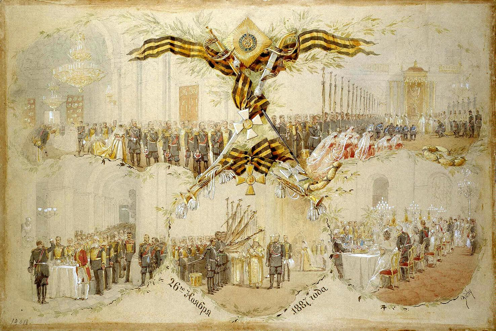

неделя гендерной грамотности
23 февраля - история праздника
Мы привыкли воспринимать 23 февраля и 8 марта как «мужской» и «женский» праздники. В это
время мы особенно подчеркиваем различия между мужчинами и женщинами, основываясь
напредставлениях о биологии и традиционных ролях.
Между тем, исторически ни к тому, ни к другому праздники не имеют почти никакого отношения.
Давайте разбираться вместе? Начнем с «мужского» праздника.
23 февраля отмечается 8 марта?
Исторически - да.
23 февраля 1917 года началась забастовка работниц ткацких фабрик Выборгской стороны.
Петроградас требованиями «Хлебаи мира!», переросшая в Февральскую революцию. 23 февраля – это
дата по старому стилю,а по новому – 8 марта.В советской традиции женский день закрепили за 8-м
марта, и уже дальше этот день стал праздничным днем для многих стран мира.
Демонстрация 1917 года
23 февраля – это не день мужчин, а день армии, в которой также служат
и женщины.
В прошлом году Сергей Шойгу, поздравляя женщин-военнослужащих, назвал их точное количество в
Российской армии – свыше 41 000 человек. Однако только мужчины в России обязаны служить в армии.
Поэтому постепенное превращение 23 февраля в «мужской праздник» интуитивно понятно,хотя и
неоправданно.
https://tass.ru/armiya-i-opk/10846337
История праздника
Впервые дата 23 февраля стала праздничной в 1919 году.Тогда ее назвали «Днем Красного подарка»*
и приурочили к годовщине боев* первых красноармейских частей с немецкими войсками под Псковом и
Нарвой.Этот праздник посвящён созданию именно советской Армии, преемниками которой являются
вооруженные силы всех стран постсоветского пространства.
* Откуда взялось выражение «красный подарок»? Во второй половине 1918-го года в РСФСР
зарождается народное движение по сбору вещей и подарков красноармейцам – Комиссия «Красного
подарка».
День красного подарка проводился не только в феврале.
• Боев первых красноармейских частей с немецкими войсками под Псковом и Нарвой
на самом деле не было. Это большевистский миф, закрепленный в 1938 г. в «Кратком курсе
истории ВКП(б)». В книге утверждалось, что в 1918 г. под Нарвой и Псковом «немецким
оккупантам был дан решительный отпор. Их продвижение на Петроград было приостановлено.
День отпора войскам германского империализма – 23 февраля стал днем рождения молодой
Красной Армии».
А что было? На самом деле 23 февраля 1918-го года Россия получила ультиматум
от Германии, в результате которого Владимир Ленин подписал мирный договор
о капитуляции России в Первой мировой войне, по условиям которого страна потеряла
огромные территории.
Советская делегация прибыла в Брест для подписания мира
С 1922-го года 23 февраля – это День Красной армии и Военно-морского флота.
В 1922-м было принято постановление о четвертой годовщине Рабоче-крестьянской Красной
армии. Вступительная статья сборника «Красная армия. 23 февраля 1918 — 23 февраля
1922» гласит: «Буржуазно-дворянская Россия из года в год праздновала юбилеи различных
частей армии*. В головы крестьян, составлявших кадры царских опричников, вбивали тупое
чувство гордости „славной историей подвигов“ их полков... Нынешний юбилей — это и мировой
праздник угнетенных пролетариев».

* Аналог в Царской России – День Георгиевских кавалеров, отмечавшийся официально 26 ноября. В этот день в 1769-м году императрица Екатерина II Великая учредила орден Святого Великомученика и Победоносца Георгия. В этот день чествовали всех кавалеров Георгиевских отличий – начиная с А. В. Суворова и заканчивая простыми солдатами, награжденными Георгиевскими крестами и медалями.
Ил. 8. М.А. Зичи. Празднование Дня св. Георгия в Зимнем дворце 26 ноября 1887 года. 1887. Акварель. Государственный Эрмитаж
С 1946-го года — это День Советской армии и Военно-морского флота.
Каждый год проходят торжественные заседания с участием руководства страны.
В 1951-м году исторически неверные данные о битве с немцами под Нарвой были заменены.
В «Истории гражданской войны в СССР» говорится, что в 1919-м году первая годовщина
Красной Армии праздновалась «в памятный день мобилизации трудящихся на защиту
социалистического Отечества, массового вступления рабочих в Красную Армию, широкого
формирования первых отрядов и частей новой армии».
В 1995-м году – День защитников Отечества и возвращение «немецкого
следа».
В Федеральном законе от 13 марта 1995 г. N32 «О днях воинской славы России»,
за праздником в день 23 февраля закрепляется официальное наименование
«День победы Красной Армии над кайзеровскими войсками Германии в 1918 г. –
День защитников Отечества».
С 2002-го года в России 23 февраля - выходной день.
15 апреля 2006 все в том же законе о «О днях воинской славы России» из официального
описания праздника исключены слова «День победы Красной Армии над кайзеровскими
войсками Германии (1918 год)». Так и появился просто «День защитника Отечества».
Если 23 февраля – не день мужчин, то когда праздновать мужское?
В 1999-м году официально появился Международный мужской день , который празднуется
19 ноября и пользуется широкой поддержкой ООН. Этот праздник – по аналогии с 8 марта –
поднимает вопрос о правах и гендерной дискриминации мужчин.
А о том, как менялись представления об «идеальном мужчине» на протяжении истории
и как эти представления влияют на благополучие современных мужчин, мы поговорим
на лекции про маскулинность 1 марта.
Это интересно: научпоп-проекты про гендер и мужское
- Проект «Маскулинность для чайников» на Colta
- Введение в гендерные исследования на Арзамасе
- Образовательный фестиваль про мужчин
и маскулинности в России и мире Moscow MaleFest - TED Talk «Призыв к мужчинам» Тони Портера
Gender Literacy Week
February 23 - the history of the holiday
We are used to thinking of February 23 and March 8 as "masculine" and "feminine" holidays.
This time of the year, we tend to emphasize the differences between men and women, based
on our perceptions of biological and traditional gender roles. Meanwhile, historically, neither
of these holidays has much to do with these perceptions. Let's sort it out together and start
with
the "masculine" holiday.
February 23 is celebrated on March 8?
Historically, yes.
On February 23, 1917, a women's strike broke out at the weaving mills on the Vyborg side
of Petrograd, demanding "Bread and Peace," which escalated into the February Revolution.
February 23 is according to the Julian calendar, but in the modern calendar it is March 8.
In the Soviet tradition, women's day was fixed on March 8, and the day has since become
a holiday for many countries around the world.
The 1917 Demonstration
February 23 is not a Men's Day, but an Army Day, and women serve in
the army too.
Last year, Sergei Shoigu, when greeting female soldiers, named the exact number of female
members of the Russian army - more than 41,000. However, in Russia, only men are obliged
to serve in the army. Therefore, the gradual transformation of February 23 into a "men's
holiday"
is understandable, yet still not justified.
https://tass.ru/armiya-i-opk/10846337
History of the holiday
The date February 23 first became a holiday in 1919. At that time it was the "Day of the Red
Gift "*
and was timed to the anniversary of the battles* of the first Red Army units with the German
troops
near Pskov and Narva. This holiday was dedicated to the establishment of the Soviet Army,
the successor of which are the armed forces of all post-Soviet countries.
* Where does the term "red gift" come from?In the second half of 1918 in the RSFSR,
a people's movement was born to collect clothes and gifts for the Red Army soldiers -
the Red Gift Commission.
The Day of the Red present was not held just in February
• In fact, there were no battles between the first Red Army units and the German troops
at Pskov and Narva. This is a Bolshevik myth, enshrined in 1938 in the "Brief Course of
the History
of the VKP(b)". It was stated in the book that in 1918 at Narva and Pskov"the German invaders
were repulsed resolutely. Their advance on Petrograd was suspended. The day of repulsion
against
the troops of German imperialism - February 23 became the birthday of the young Red Army.”
So what really happened? In fact, on February 23, 1918, Russia received an ultimatum
from Germany, as a result of which Vladimir Lenin signed a peace treaty under which Russia
capitulated in World War I, losing vast swathes of territory.
A Soviet delegation arrives in Brest to sign the peace treaty
Since 1922, February 23 has been the Day of the Red Army and the Navy.
In 1922 a decree was passed on the fourth anniversary of the Workers' and Peasants' Red Army.
The introductory article of the collection "Red Army. February 23, 1918 - February 23, 1922"
states:
"Bourgeois and noble Russia celebrated anniversaries of various units of the army* from year
to year. The peasants who made up the cadres of the tsarist oprichniki had a blunt sense of
pride
in the "glorious history of the exploits" of their regiments... The present anniversary is just
as much
an international holiday of the oppressed proletarians.
* The analogue in Tsarist Russia was the Day of St. George Cavaliers, officially celebrated on November 26. On this day in 1769, Empress Catherine II the Great established the Order of the Holy Great Martyr and Victory Bearer George. On this day all the knights of St George's distinctions were honored - starting with A. V. Suvorov and ending with ordinary soldiers who were awarded St George's crosses and medals.
Ill. 8. M.A. Zichi. Celebration of St. George's Day at the Winter Palace on November 26, 1887. 1887. Watercolor. The State Hermitage Museum.
Since 1946, it has been the Day of the Soviet Army and the Navy.
Every year commemorative meetings are held with the participation of the country's top
officials.
In 1951, historically incorrect data of the battle with the Germans near Narva was corrected.
In the "History of the Civil War in the USSR" it is stated that in 1919 the first anniversary
of the Red Army was celebrated "as a memorable day of the mobilization of workers for the defense
of the socialist Fatherland, the mass entry of workers into the Red Army, the extensive formation
of the first detachments and units of the new army."
1995 - the Day of the Fatherland Defenders and the return of the "German trace.
In the Federal Law N32 of March 13, 1995 "On the Days of Military Glory of Russia",
the holiday on February 23 is officially named "The Day of Victory of the Red Army
over the Kaiser troops of Germany in 1918. - The Day of Fatherland Defenders
Since 2002 February 23 has been a non-working day in Russia.
April 15, 2006, the same law "On the Days of Military Glory of Russia" excluded the words "Day of
the Red Army victory over the Kaizer troops of Germany (1918)" from the official description of the
holiday. This is how the " Fatherland Defender's Day" was established.
If February 23 is not a men's day, then when can we celebrate men?
In 1999, the International Men Day was officially established, and ever since then it is celebrated
on November 19 and is widely supported by the UN. This holiday - in analogy with March 8 -
is dedicated to raising awarness about of the violation of men's rights and gender discrimination
of men.
And we'll talk about how the idea of "the perfect man" has changed throughout history
and how these ideas affect the well-being of modern men during the townhall about
masculinity on March 1.
Это интересно: научпоп-проекты про гендер и мужское
- Masculinity for Dummies" project at Colta
- Introduction to Gender Studies at Arzamas
- Educational festival about men and masculinity in Russia and in the world Moscow MaleFest
- TED Talk "A Call to Men" by Tony Porter